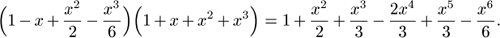

C++ Programming Robert Sedgewick - Princeton University Addison Wesley Professional Algorithms in C++, Parts 1–4: Fundamentals, Data Structure, Sorting, Searching, Third Edition C++ Programming Robert Sedgewick - Princeton University Addison Wesley Professional Algorithms in C++, Parts 1–4: Fundamentals, Data Structure, Sorting, Searching, Third Edition
4.9. Application-Based ADT Example
As a final example, we consider in this section an application-specific ADT that is representative of the relationship between application domains and the algorithms and data structures of the type that we consider in this book. The example that we shall consider is the polynomial ADT. It is drawn from symbolic mathematics, where we use the computer to help us manipulate abstract mathematical objects.
Our goal is to be able to write programs that can manipulate polynomials, and perform computations such as

We also want to be able to evaluate the polynomial for a given value of x. For x = 0.5, both sides of this equation have the value 1.1328125.
Program 4.23. Polynomial client (binomial coefficients)|
This client program uses the polynomial ADT that is defined in the interface Program 4.24 to perform algebraic manipulations on polynomials with integer coefficients. It takes an integer N and a floating-point number p from the command line, computes (x + 1)N, and checks the result by evaluating the resulting polynomial at x = p.
#include <iostream.h>
#include <stdlib.h>
#include "POLY.cxx"
int main(int argc, char *argv[])
{ int N = atoi(argv[1]); float p = atof(argv[2]);
cout << "Binomial coefficients" << endl;
POLY<int> x(1,1), one(1,0), t = x + one, y = t;
for (int i = 0; i < N; i++)
{ y = y*t; cout << y << endl; }
cout << y.eval(p) << endl;
}
|
The operations of multiplying, adding, and evaluating polynomials are at the heart of a great many mathematical calculations. Program 4.23 is a simple example that performs the symbolic operations corresponding to the polynomial equations
(x + 1)2 = x2 + 2x + 1;
(x + 1)3 = x3 + 3x2 + 3x + 1;
(x + 1)4 = x4 + 4x3 + 6x2 + 4x + 1;
(x + 1)5 = x5 + 5x4 + 10x3 + 10x2 + 5x + 1;
. . . .
The same basic ideas extend to include operations such as composition, integration, differentiation, knowledge of special functions, and so forth.
The first step is to define the polynomial ADT, as illustrated in the interface Program 4.24. For a well-understood mathematical abstraction such as a polynomial, the specification is so clear as to be unspoken (in the same way as for the ADT for complex numbers that we discussed in Section 4.8): We want instances of the ADT to behave precisely in the same manner as the well-understood mathematical abstraction.
To implement the functions defined in the interface, we need to choose a particular data structure to represent polynomials and then to implement algorithms that manipulate the data structure to produce the behavior that client programs expect from the ADT. As usual, the choice of data structure affects the potential efficiency of the algorithms, and we are free to consider several. As with stacks and queues, we have the choice of using a linked representation or an array representation. Program 4.25 is an implementation using an array representation; the linked-list representation is left as an exercise (see Exercise 4.78).
To add two polynomials, we add their coefficients. If the polynomials are represented as arrays, the add function amounts to a single loop through the arrays, as shown in Program 4.25. To multiply two polynomials, we use the elementary algorithm based on the distributive law. We multiply one polynomial by each term in the other, line up the results so that powers of x match, then add the terms to get the final result. The following table summarizes the computation for(1-x+x2/2-x3/6)(1+x+x2+x3):

The computation seems to require time proportional to N2 to multiply two polynomials. Finding a faster algorithm for this task is a significant challenge. We shall consider this topic in detail in Part 8, where we shall see that it is possible to accomplish the task in time proportional to N3 = 2 using a divide-and-conquer algorithm, and in time proportional to N lg N using the fast Fourier transform.
Program 4.24. ADT interface for polynomials|
This interface for a polynomial ADT uses a template to allow different types to be used for coefficients. It overloads the binary operators + and *, so that client code can use polynomials in arithmetic expressions involving these operators. The constructor, when invoked with arguments c and N, creates a polynomial corresponding to cxN.
template <class Number>
class POLY
{
private:
// Implementation-dependent code
public:
POLY<Number>(Number, int);
float eval(float) const;
friend POLY operator+(POLY &, POLY &);
friend POLY operator*(POLY &, POLY &);
};
|
The implementation of the evaluate function in Program 4.25 uses a classic efficient algorithm known as Horner's algorithm. A naive implementation of the function involves a direct computation using a function that computes xN. This approach takes quadratic time. A less naive implementation involves saving the values of xi in a table, then using them in a direct computation. This approach takes linear extra space. Horner's algorithm is a direct optimal linear algorithm based on parenthesizations such as
a4x4 + a3x3 + a2x2 + a1x + a0 = (((a4x + a3 )x + a2 )x + a1 )x + a0:
Horner's method is often presented as a time-saving trick, but it is actually an early and outstanding example of an elegant and efficient algorithm, which reduces the time required for this essential computational task from quadratic to linear. The calculation that we performed in Program 4.5 for converting ASCII strings to integers is a version of Horner's algorithm. We shall encounter Horner's algorithm again, in Chapter 14 and Part 5, as the basis for an important computation related to certain symbol-table and string-search implementations.
Program 4.25. Array implementation of polynomial ADT|
In this implementation of an ADT for polynomials, the data representation consists of the degree and a pointer to an array of coefficients. It is not a first-class ADT: clients must be aware of memory leaks and pointer-assignment copy semantics (see Exercise 4.79).
template <class Number>
class POLY
{
private:
int n; Number *a;
public:
POLY<Number>(Number c, int N)
{ a = new Number[N+1]; n = N+1; a[N] = c;
for (int i = 0; i < N; i++) a[i] = 0;
}
float eval(float x) const
{ double t = 0.0;
for (int i = n-1; i >= 0; i--)
t = t*x + a[i];
return t;
}
friend POLY operator+(POLY &p, POLY &q)
{ POLY t(0, p.n>q.n ? p.n-1 : q.n-1);
for (int i = 0; i < p.n; i++)
t.a[i] += p.a[i];
for (int j = 0; j < q.n; j++) t.a[j] += q.a[j];
return t;
}
friend POLY operator*(POLY &p, POLY &q)
{ POLY t(0, (p.n-1)+(q.n-1));
for (int i = 0; i < p.n; i++)
for (int j = 0; j < q.n; j++)
t.a[i+j] += p.a[i]*q.a[j];
return t;
}
};
|
The overloaded + and * operators construct new polynomials to hold their results, so this implementation has memory leaks. We can easily plug these leaks by implementing a copy constructor, overloaded assignment operator, and a destructor, which we would do if we were processing huge polynomials, or processing huge numbers of small ones, or building an ADT for use in an applications system (see Exercise 4.79).
As usual, the array representation for implementing the polynomial ADT is but one possibility. If exponents are huge and there are not many terms, a linked-list representation might be more appropriate. For example, we would not want to use Program 4.25 to perform a multiplication such as
(1 + x1000000 )(1 + x2000000 ) = 1 + x1000000 + x2000000 + x3000000;
because it would use an array with space for millions of unused coefficients. Exercise 4.78 explores the linked-list option in more detail.
Exercises |  4.78 Provide an implementation for the polynomial ADT given in the text (Program 4.24) that uses linked lists as the underlying data structure. Your lists should not contain any nodes corresponding to terms with coefficient value 0. 4.78 Provide an implementation for the polynomial ADT given in the text (Program 4.24) that uses linked lists as the underlying data structure. Your lists should not contain any nodes corresponding to terms with coefficient value 0.
| | 4.79 Plug the memory leaks in Program 4.25 by adding a copy constructor, overloaded assignment operator, and a destructor. | |  4.80 Add overloaded operators += and *= to the polynomial ADT in Program 4.25. 4.80 Add overloaded operators += and *= to the polynomial ADT in Program 4.25.
| | 4.81 Extend the polynomial ADT given in the text to include integration and differentiation of polynomials. | | 4.82 Modify your polynomial ADT from Exercise 4.81 to ignore all terms with exponents greater than or equal to an integer M, which is provided by the client at initialization.
| |  4.83 Extend your polynomial ADT from Exercise 4.81 to include polynomial division and composition. 4.83 Extend your polynomial ADT from Exercise 4.81 to include polynomial division and composition.
| |  4.84 Develop an ADT that allows clients to perform addition and multiplication of arbitrarily long integers. 4.84 Develop an ADT that allows clients to perform addition and multiplication of arbitrarily long integers.
| | 4.85 Modify the postfix-evaluation program in Section 4.3 to evaluate post-fix expressions consisting of arbitrarily long integers, using the ADT that you developed for Exercise 4.84. | | | | 4.86 Write a client program that uses your polynomial ADT from Exercise 4.83 to evaluate integrals by using Taylor series approximations of functions, manipulating them symbolically. | | 4.87 Develop an ADT that provides clients with the ability to perform algebraic operations on vectors of floating-point numbers.
| | 4.88 Develop an ADT that provides clients with the ability to perform algebraic operations on matrices of abstract objects for which addition, subtraction, multiplication, and division are defined.
| | 4.89 Write an interface for a character-string ADT, which includes operations for creating a string, comparing two strings, concatenating two strings, copying one string to another, and returning the string length. Note: Your interface will be quite similar to the interface provided in the C++ standard library.
| | 4.90 Provide an implementation for your string ADT interface from Exercise 4.89, using the C++ string library where appropriate.
| | 4.91 Provide an implementation for your string interface from Exercise 4.89, using a linked list for the underlying representation. Analyze the worst-case running time of each operation.
| | 4.92 Write an interface and an implementation for an index set ADT, which processes sets of integers in the range 0 to M–1 (where M is a defined constant) and includes operations for creating a set, computing the union of two sets, computing the intersection of two sets, computing the complement of a set, computing the difference of two sets, and printing out the contents of a set. In your implementation, use an array of M–1 0-1 values to represent each set.
| | 4.93 Write a client program that tests your ADT from Exercise 4.92.
|
|